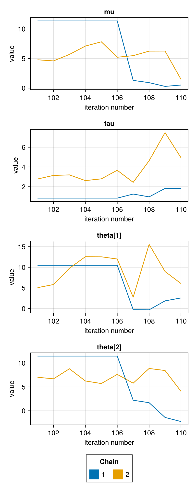

Overview
FlexiChains.jl provides a rich data structure for storing and analysing Markov chain Monte Carlo (MCMC) output.
For example, this is a chain obtained by sampling from the classic eight-schools model (with centred parameterisation) using the NUTS algorithm.
using FlexiChainschain = FlexiChains.EXAMPLE_CHAIN╭─FlexiChain (10 iterations, 2 chains) ────────────────────────────────────────╮
│ ↓ iter = 101:110 │
│ → chain = 1:2 │
│ │
│ Parameters (3) ── VarName │
│ Float64 mu, tau │
│ Vector{Float64} theta (8,) │
│ │
│ Extras (2) │
│ Float64 logjoint │
│ Bool is_divergent │
╰──────────────────────────────────────────────────────────────────────────────╯This model might be expressed in pseudocode as follows:
y = [28, 8, -3, 7, -1, 1, 18, 12]sigma = [15, 10, 16, 11, 9, 11, 10, 18]mu ~ Normal(0, 5)tau ~ HalfCauchy(0, 5)theta ~ MvNormal(fill(mu, 8), tau^2 * I)y ~ MvNormal(theta, sigma^2 * I)Primary features
Type and structure fidelity
FlexiChains preserves the original shapes of your samples: all Julia types are faithfully stored without modification. The example chain above has mu and tau as ordinary Float64s. More interestingly, though, theta is stored as a Vector{Float64} of length 8; and the extra statistic is_divergent is stored as a Bool.
This approach avoids flatten all samples into a single Array{Float64}, which not only causes is_divergent to be promoted unnecessarily, but also causes theta to be split up into separate variables.
Diverse input sources
FlexiChains is the default chain type for Turing.jl. Note that if you are using Turing with FlexiChains, you probably want to look at the FlexiChains v0.6 docs instead, since Turing is using that version.
You can also construct a FlexiChain from a variety of other sources, including ParallelMCMC.jl, Pigeons.jl, Stan CSV files, MCMCChains.jl, or PosteriorDB.jl.
Expressive indexing
You can access data stored in chains in a variety of ways, using the full power of DimensionalData.jl selectors.
chain[@vn(tau), iter=101:End, chain=2]┌ 0-element DimArray{Float64, 1} Parameter(tau) ┐
├───────────────────────────────────────────────┴───────── dims ┐
↓ iter Sampled{Int64} 201:200 ForwardOrdered Regular Points
└───────────────────────────────────────────────────────────────┘
You can also access sub-components of variables using VarNames:
chain[@vn(theta[2])] # Only get the second element of theta.┌ 10×2 DimArray{Float64, 2} Parameter(theta[2]) ┐
├───────────────────────────────────────────────┴───────── dims ┐
↓ iter Sampled{Int64} 101:110 ForwardOrdered Regular Points,
→ chain Sampled{Int64} 1:2 ForwardOrdered Regular Points
└───────────────────────────────────────────────────────────────┘
↓ → 1 2
101 11.4664 7.0214
102 11.4664 6.69599
103 11.4664 8.79631
104 11.4664 6.24494
⋮
107 2.20435 5.78394
108 1.68678 8.86566
109 -1.40004 8.43466
110 -2.26718 4.07403Downstream analysis
FlexiChains provides a number of tools for statistical analysis, including:
- simple statistics (mean, variance, quantiles, etc.)
- MCMC diagnostics and statistics via MCMCDiagnosticTools.jl and PosteriorStats.jl
- LOO-CV via PosteriorStats.jl and PSIS.jl
ss = summarystats(chain)╭─FlexiSummary (9 statistics) ─────────────────────────────────────────────────╮
│ iter collapsed │
│ chain collapsed │
│ ↓ stat = [mean, std, mcse, ess_bulk, ess_tail, rhat, q5, q50, q95] │
│ │
│ Parameters (10) ── VarName │
│ Float64 mu, tau, theta[1], theta[2], theta[3], theta[4], theta[5] │
│ theta[6], theta[7], theta[8] │
│ │
│ Extras (2) │
│ Float64 logjoint, is_divergent │
│ │
│ Summary │
│ param mean std mcse … rhat q5 q50 q95 │
│ mu 6.2892 4.0418 1.3569 1.7726 0.5050 5.9666 11.3517 │
│ tau 2.4350 1.7606 0.6314 2.4891 0.8460 2.1439 5.0667 │
│ theta[1] 7.8947 4.6187 1.2910 1.5325 -0.2803 10.1274 12.7158 │
│ theta[2] 6.9136 4.2843 1.4285 2.1268 -1.4434 7.3236 11.4664 │
│ theta[3] 6.3104 4.2456 1.4013 … 1.5592 -0.4254 5.8700 11.5705 │
│ theta[4] 5.9543 5.6851 1.7363 1.4515 -1.8108 6.2765 12.1310 │
│ theta[5] 5.8654 4.0877 1.3577 2.2345 0.6435 5.2962 10.9676 │
│ theta[6] 5.2498 5.5036 1.8398 1.3346 -2.2504 4.9312 12.0114 │
│ theta[7] 6.7900 5.0096 1.4763 1.3851 0.9274 5.3042 12.1662 │
│ theta[8] 7.0127 4.4819 1.4210 … 1.8298 -0.8694 7.2138 11.6412 │
╰──────────────────────────────────────────────────────────────────────────────╯ss[@vn(mu), stat=:mean]6.289235601653482For added versatility you can also convert a FlexiChain into a DimArray or a DataFrame.
Plotting
Many visualisation functions with both Makie.jl and Plots.jl backends are provided, along with a PairPlots.jl extension.
using CairoMakieusing FlexiChains.Makie: traceplot# Restrict variables plotted for this example.vns = [@vn(mu), @vn(tau), @vn(theta[1]), @vn(theta[2])]traceplot(chain, vns)